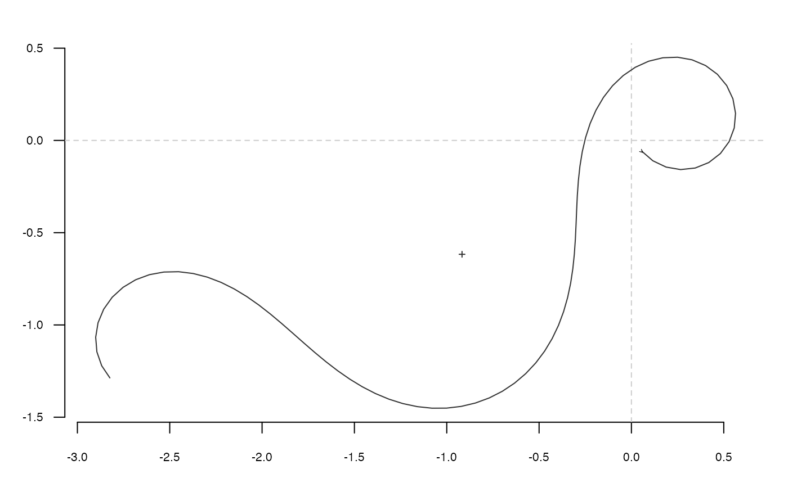

Calculates and draws 'tfourier' shapes.
tfourier_shape calculates a 'Fourier tangent angle shape' given
Fourier coefficients (see Details) or can generate some 'tfourier'
shapes.
tfourier_shape(an, bn, ao = 0, nb.h, nb.pts = 80, alpha = 2, plot = TRUE)
Arguments
| an |
|
|---|---|
| bn |
|
| ao |
|
| nb.h |
|
| nb.pts |
|
| alpha |
|
| plot |
|
Value
A matrix of (x; y) coordinates.
References
Claude, J. (2008) Morphometrics with R, Use R! series, Springer 316 pp.
See also
Other tfourier: tfourier_i,
tfourier
Examples
#> x y #> [1,] -0.068536123 0.03816985 #> [2,] 0.010421770 0.02861438 #> [3,] -0.063790622 0.05721817 #> [4,] -0.140579972 0.07793172 #> [5,] -0.183238239 0.14505793 #> [6,] -0.247181702 0.19235370 #> [7,] -0.320133871 0.22403393 #> [8,] -0.368197883 0.28740195 #> [9,] -0.418456077 0.34904422 #> [10,] -0.483991433 0.39410832 #> [11,] -0.527015593 0.46100060 #> [12,] -0.558482563 0.53404501 #> [13,] -0.615378810 0.58961904 #> [14,] -0.666002527 0.65096148 #> [15,] -0.703250243 0.72123426 #> [16,] -0.768466384 0.76675910 #> [17,] -0.843721723 0.79249409 #> [18,] -0.920086430 0.81472216 #> [19,] -0.990492372 0.77772677 #> [20,] -1.035089701 0.71187289 #> [21,] -1.107991534 0.68007700 #> [22,] -1.173409209 0.63484224 #> [23,] -1.172271234 0.55531639 #> [24,] -1.245117865 0.52339423 #> [25,] -1.169306190 0.54744097 #> [26,] -1.166890972 0.46794366 #> [27,] -1.134401707 0.39534818 #> [28,] -1.068636587 0.35062006 #> [29,] -1.007856315 0.29932275 #> [30,] -0.955597746 0.23936695 #> [31,] -0.898595892 0.18390125 #> [32,] -0.832707879 0.13935435 #> [33,] -0.769939719 0.09050956 #> [34,] -0.718591641 0.02977217 #> [35,] -0.653105984 -0.01536412 #> [36,] -0.579711689 -0.04600613 #> [37,] -0.541356302 -0.11568052 #> [38,] -0.489158357 -0.17568911 #> [39,] -0.526675851 -0.10555999 #> [40,] -0.483094002 -0.17209027 #> [41,] -0.411233403 -0.20617413 #> [42,] -0.384991638 -0.28125426 #> [43,] -0.346581120 -0.35089827 #> [44,] -0.281483742 -0.39659277 #> [45,] -0.223918101 -0.45147312 #> [46,] -0.163346561 -0.50301673 #> [47,] -0.086698985 -0.52424890 #> [48,] -0.009264515 -0.54240265 #> [49,] 0.061119622 -0.57943951 #> [50,] 0.129392040 -0.62023819 #> [51,] 0.196505793 -0.66291605 #> [52,] 0.256624481 -0.71498715 #> [53,] 0.315395180 -0.76857503 #> [54,] 0.379092808 -0.81620137 #> [55,] 0.442596932 -0.86408541 #> [56,] 0.501564226 -0.91745689 #> [57,] 0.558878373 -0.97259983 #> [58,] 0.616862632 -1.02703770 #> [59,] 0.683127662 -1.07102180 #> [60,] 0.761505112 -1.05750770 #> [61,] 0.789105491 -0.98291631 #> [62,] 0.836639557 -0.91914980 #> [63,] 0.850183366 -0.99752212 #> [64,] 0.787935223 -0.94801632 #> [65,] 0.760460379 -0.87337860 #> [66,] 0.699791505 -0.82194959 #> [67,] 0.638226839 -0.77159636 #> [68,] 0.596708767 -0.70375901 #> [69,] 0.552733618 -0.63748804 #> [70,] 0.492705339 -0.58531274 #> [71,] 0.437325328 -0.52822763 #> [72,] 0.414799359 -0.45195026 #> [73,] 0.364582422 -0.39027438 #> [74,] 0.378601540 -0.46856307 #> [75,] 0.344461362 -0.39672921 #> [76,] 0.268368346 -0.37358815 #> [77,] 0.341471182 -0.34225716 #> [78,] 0.264568188 -0.36254472 #> [79,] 0.260420375 -0.28311896 #> [80,] 0.189614910 -0.24689408tfourier_shape()#> x y #> [1,] 0.09183459 -0.031986645 #> [2,] 0.17001935 -0.046574315 #> [3,] 0.24946265 -0.042777258 #> [4,] 0.32588423 -0.020745526 #> [5,] 0.39516714 0.018312566 #> [6,] 0.45364464 0.072220248 #> [7,] 0.49834332 0.138005377 #> [8,] 0.52715774 0.212136240 #> [9,] 0.53894133 0.290792472 #> [10,] 0.53350977 0.370140780 #> [11,] 0.51156385 0.446587049 #> [12,] 0.47454766 0.516982060 #> [13,] 0.42446404 0.578766258 #> [14,] 0.36367068 0.630048056 #> [15,] 0.29467919 0.669618632 #> [16,] 0.21997520 0.696912749 #> [17,] 0.14187168 0.711929289 #> [18,] 0.06240199 0.715126775 #> [19,] -0.01674680 0.707308517 #> [20,] -0.09426363 0.689509731 #> [21,] -0.16921267 0.662895876 #> [22,] -0.24100957 0.628678029 #> [23,] -0.30938249 0.588048004 #> [24,] -0.37432480 0.542133381 #> [25,] -0.43604488 0.491970774 #> [26,] -0.49491719 0.438494552 #> [27,] -0.55143696 0.382537680 #> [28,] -0.60617983 0.324841282 #> [29,] -0.65976676 0.266069718 #> [30,] -0.71283387 0.206828368 #> [31,] -0.76600653 0.147681734 #> [32,] -0.81987700 0.089169958 #> [33,] -0.87498502 0.031822235 #> [34,] -0.93180095 -0.023833913 #> [35,] -0.99071132 -0.077268205 #> [36,] -1.05200721 -0.127948273 #> [37,] -1.11587565 -0.175345298 #> [38,] -1.18239482 -0.218944104 #> [39,] -1.25153359 -0.258256784 #> [40,] -1.32315586 -0.292838664 #> [41,] -1.39702995 -0.322305148 #> [42,] -1.47284289 -0.346347922 #> [43,] -1.55021895 -0.364749032 #> [44,] -1.62874169 -0.377391586 #> [45,] -1.70797802 -0.384266162 #> [46,] -1.78750287 -0.385472487 #> [47,] -1.86692290 -0.381216431 #> [48,] -1.94589784 -0.371802874 #> [49,] -2.02415801 -0.357625390 #> [50,] -2.10151733 -0.339154015 #> [51,] -2.17788102 -0.316922467 #> [52,] -2.25324797 -0.291516194 #> [53,] -2.32770765 -0.263562438 #> [54,] -2.40143197 -0.233723206 #> [55,] -2.47466243 -0.202691664 #> [56,] -2.54769274 -0.171191988 #> [57,] -2.62084744 -0.139982287 #> [58,] -2.69445642 -0.109859652 #> [59,] -2.76882557 -0.081665948 #> [60,] -2.84420358 -0.056292508 #> [61,] -2.92074519 -0.034681427 #> [62,] -2.99847149 -0.017820890 #> [63,] -3.07722863 -0.006731758 #> [64,] -3.15664689 -0.002442707 #> [65,] -3.23610343 -0.005951644 #> [66,] -3.31469300 -0.018171961 #> [67,] -3.39121180 -0.039863627 #> [68,] -3.46416083 -0.071551089 #> [69,] -3.53177451 -0.113432420 #> [70,] -3.59208009 -0.165286957 #> [71,] -3.64299083 -0.226391390 #> [72,] -3.68243302 -0.295456356 #> [73,] -3.70850206 -0.370596632 #> [74,] -3.71963806 -0.449347157 #> [75,] -3.71480598 -0.528734226 #> [76,] -3.69366119 -0.605405951 #> [77,] -3.65667926 -0.675818969 #> [78,] -3.60522943 -0.736470192 #> [79,] -3.54157512 -0.784154410 #> [80,] -3.46879251 -0.816222261tfourier_shape(nb.h=6, alpha=0.4, nb.pts=500)#> x y #> [1,] -0.0070758864 -0.010523540 #> [2,] -0.0155315607 -0.019853534 #> [3,] -0.0249797938 -0.028176882 #> [4,] -0.0352500881 -0.035461680 #> [5,] -0.0461831997 -0.041707822 #> [6,] -0.0576352489 -0.046942113 #> [7,] -0.0694803075 -0.051213156 #> [8,] -0.0816116138 -0.054586379 #> [9,] -0.0939416253 -0.057139424 #> [10,] -0.1064011475 -0.058958087 #> [11,] -0.1189377788 -0.060132863 #> [12,] -0.1315138973 -0.060756135 #> [13,] -0.1441043856 -0.060919938 #> [14,] -0.1566942592 -0.060714256 #> [15,] -0.1692763325 -0.060225728 #> [16,] -0.1818490198 -0.059536702 #> [17,] -0.1944143515 -0.058724504 #> [18,] -0.2069762532 -0.057860878 #> [19,] -0.2195391266 -0.057011504 #> [20,] -0.2321067492 -0.056235561 #> [21,] -0.2446815016 -0.055585309 #> [22,] -0.2572639167 -0.055105668 #> [23,] -0.2698525353 -0.054833808 #> [24,] -0.2824440402 -0.054798760 #> [25,] -0.2950336313 -0.055021069 #> [26,] -0.3076155911 -0.055512507 #> [27,] -0.3201839840 -0.056275872 #> [28,] -0.3327334219 -0.057304869 #> [29,] -0.3452598263 -0.058584094 #> [30,] -0.3577611142 -0.060089094 #> [31,] -0.3702377339 -0.061786500 #> [32,] -0.3826929841 -0.063634193 #> [33,] -0.3951330504 -0.065581492 #> [34,] -0.4075667044 -0.067569323 #> [35,] -0.4200046118 -0.069530366 #> [36,] -0.4324582091 -0.071389166 #> [37,] -0.4449381135 -0.073062250 #> [38,] -0.4574520384 -0.074458284 #> [39,] -0.4700022038 -0.075478369 #> [40,] -0.4825822487 -0.076016603 #> [41,] -0.4951736800 -0.075961080 #> [42,] -0.5077419399 -0.075195530 #> [43,] -0.5202322312 -0.073601839 #> [44,] -0.5325653223 -0.071063712 #> [45,] -0.5446336551 -0.067471698 #> [46,] -0.5562981947 -0.062729785 #> [47,] -0.5673865841 -0.056763643 #> [48,] -0.5776932790 -0.049530437 #> [49,] -0.5869824149 -0.041029897 #> [50,] -0.5949941681 -0.031316039 #> [51,] -0.6014552744 -0.020508573 #> [52,] -0.6060941310 -0.008802667 #> [53,] -0.6086604987 0.003524579 #> [54,] -0.6089492365 0.016112821 #> [55,] -0.6068267618 0.028524200 #> [56,] -0.6022581119 0.040257685 #> [57,] -0.5953316937 0.050773005 #> [58,] -0.5862782086 0.059524098 #> [59,] -0.5754800094 0.066000681 #> [60,] -0.5634674503 0.069775021 #> [61,] -0.5508997390 0.070549527 #> [62,] -0.5385294098 0.068199594 #> [63,] -0.5271516692 0.062805686 #> [64,] -0.5175422598 0.054668950 #> [65,] -0.5103897421 0.044306098 #> [66,] -0.5062297552 0.032421581 #> [67,] -0.5053894839 0.019858095 #> [68,] -0.5079499514 0.007529623 #> [69,] -0.5137318467 -0.003655944 #> [70,] -0.5223076075 -0.012875681 #> [71,] -0.5330388934 -0.019462541 #> [72,] -0.5451350277 -0.022959792 #> [73,] -0.5577251022 -0.023152793 #> [74,] -0.5699347561 -0.020075201 #> [75,] -0.5809584147 -0.013990287 #> [76,] -0.5901189912 -0.005351360 #> [77,] -0.5969094027 0.005252297 #> [78,] -0.6010132133 0.017156329 #> [79,] -0.6023047477 0.029681470 #> [80,] -0.6008315727 0.042186548 #> [81,] -0.5967839973 0.054109818 #> [82,] -0.5904570274 0.064996354 #> [83,] -0.5822100935 0.074511358 #> [84,] -0.5724290441 0.082440942 #> [85,] -0.5614936542 0.088683095 #> [86,] -0.5497525186 0.093232047 #> [87,] -0.5375059278 0.096159202 #> [88,] -0.5249963213 0.097593416 #> [89,] -0.5124052419 0.097702710 #> [90,] -0.4998553863 0.096678821 #> [91,] -0.4874162954 0.094725300 #> [92,] -0.4751123848 0.092049294 #> [93,] -0.4629322813 0.088856755 #> [94,] -0.4508387513 0.085350510 #> [95,] -0.4387787952 0.081730471 #> [96,] -0.4266937250 0.078195177 #> [97,] -0.4145291908 0.074943818 #> [98,] -0.4022451831 0.072177886 #> [99,] -0.3898259914 0.070101614 #> [100,] -0.3772899637 0.068920415 #> [101,] -0.3646986889 0.068836602 #> [102,] -0.3521649519 0.070041867 #> [103,] -0.3398585117 0.072706216 #> [104,] -0.3280084995 0.076963496 #> [105,] -0.3169010829 0.082894139 #> [106,] -0.3068710777 0.090506380 #> [107,] -0.2982864788 0.099717889 #> [108,] -0.2915254826 0.110340325 #> [109,] -0.2869464769 0.122069772 #> [110,] -0.2848526239 0.134486012 #> [111,] -0.2854539173 0.147063200 #> [112,] -0.2888307357 0.159193506 #> [113,] -0.2949036985 0.170223753 #> [114,] -0.3034147927 0.179503220 #> [115,] -0.3139241099 0.186438743 #> [116,] -0.3258250474 0.190551517 #> [117,] -0.3383786128 0.191528871 #> [118,] -0.3507648207 0.189264124 #> [119,] -0.3621465222 0.183878579 #> [120,] -0.3717388549 0.175721718 #> [121,] -0.3788762872 0.165348470 #> [122,] -0.3830692364 0.153475542 #> [123,] -0.3840435137 0.140921738 #> [124,] -0.3817581930 0.128539309 #> [125,] -0.3764004835 0.117144478 #> [126,] -0.3683592820 0.107454984 #> [127,] -0.3581817493 0.100041142 #> [128,] -0.3465190780 0.095294635 #> [129,] -0.3340683652 0.093416611 #> [130,] -0.3215171808 0.094424080 #> [131,] -0.3094962091 0.098171541 #> [132,] -0.2985435722 0.104383382 #> [133,] -0.2890824756 0.112692105 #> [134,] -0.2814119904 0.122677638 #> [135,] -0.2757093451 0.133903816 #> [136,] -0.2720411671 0.145949217 #> [137,] -0.2703807125 0.158430808 #> [138,] -0.2706281779 0.171019930 #> [139,] -0.2726315691 0.183451087 #> [140,] -0.2762061828 0.195524585 #> [141,] -0.2811513948 0.207104399 #> [142,] -0.2872640490 0.218112700 #> [143,] -0.2943482441 0.228522379 #> [144,] -0.3022216838 0.238348679 #> [145,] -0.3107190000 0.247640764 #> [146,] -0.3196925775 0.256473777 #> [147,] -0.3290114550 0.264941702 #> [148,] -0.3385588471 0.273151119 #> [149,] -0.3482287854 0.281215827 #> [150,] -0.3579223043 0.289252177 #> [151,] -0.3675435361 0.297374930 #> [152,] -0.3769960203 0.305693450 #> [153,] -0.3861794917 0.314308035 #> [154,] -0.3949873747 0.323306281 #> [155,] -0.4033051847 0.332759389 #> [156,] -0.4110100036 0.342718455 #> [157,] -0.4179711654 0.353210807 #> [158,] -0.4240522293 0.364236590 #> [159,] -0.4291142574 0.375765818 #> [160,] -0.4330203280 0.387736191 #> [161,] -0.4356411171 0.400051981 #> [162,] -0.4368612809 0.412584277 #> [163,] -0.4365862679 0.425172827 #> [164,] -0.4347491109 0.437629635 #> [165,] -0.4313166891 0.449744325 #> [166,] -0.4262949410 0.461291154 #> [167,] -0.4197325378 0.472037414 #> [168,] -0.4117226146 0.481752781 #> [169,] -0.4024022823 0.490219104 #> [170,] -0.3919498117 0.497240007 #> [171,] -0.3805795605 0.502649685 #> [172,] -0.3685349034 0.506320306 #> [173,] -0.3560795842 0.508167533 #> [174,] -0.3434880379 0.508153810 #> [175,] -0.3310353029 0.506289241 #> [176,] -0.3189871584 0.502630083 #> [177,] -0.3075910836 0.497275020 #> [178,] -0.2970685377 0.490359584 #> [179,] -0.2876089353 0.482049160 #> [180,] -0.2793655361 0.472531093 #> [181,] -0.2724533146 0.462006435 #> [182,] -0.2669487306 0.450681826 #> [183,] -0.2628911997 0.438761940 #> [184,] -0.2602859740 0.426442849 #> [185,] -0.2591080917 0.413906509 #> [186,] -0.2593070308 0.401316527 #> [187,] -0.2608117187 0.388815201 #> [188,] -0.2635355802 0.376521796 #> [189,] -0.2673813609 0.364531917 #> [190,] -0.2722455218 0.352917824 #> [191,] -0.2780220648 0.341729492 #> [192,] -0.2846057055 0.330996230 #> [193,] -0.2918943634 0.320728675 #> [194,] -0.2997909802 0.310920991 #> [195,] -0.3082047089 0.301553153 #> [196,] -0.3170515382 0.292593195 #> [197,] -0.3262544293 0.283999359 #> [198,] -0.3357430472 0.275722080 #> [199,] -0.3454531675 0.267705797 #> [200,] -0.3553258382 0.259890581 #> [201,] -0.3653063648 0.252213582 #> [202,] -0.3753431845 0.244610328 #> [203,] -0.3853866833 0.237015899 #> [204,] -0.3953880051 0.229366010 #> [205,] -0.4052978954 0.221598044 #> [206,] -0.4150656180 0.213652050 #> [207,] -0.4246379783 0.205471760 #> [208,] -0.4339584852 0.197005629 #> [209,] -0.4429666848 0.188207927 #> [210,] -0.4515976926 0.179039888 #> [211,] -0.4597819565 0.169470926 #> [212,] -0.4674452785 0.159479894 #> [213,] -0.4745091222 0.149056394 #> [214,] -0.4808912315 0.138202091 #> [215,] -0.4865065829 0.126931995 #> [216,] -0.4912686865 0.115275684 #> [217,] -0.4950912458 0.103278381 #> [218,] -0.4978901752 0.091001850 #> [219,] -0.4995859635 0.078525010 #> [220,] -0.5001063561 0.065944215 #> [221,] -0.4993893150 0.053373094 #> [222,] -0.4973861923 0.040941895 #> [223,] -0.4940650379 0.028796230 #> [224,] -0.4894139374 0.017095184 #> [225,] -0.4834442558 0.006008700 #> [226,] -0.4761936438 -0.004285757 #> [227,] -0.4677286435 -0.013607291 #> [228,] -0.4581467192 -0.021776376 #> [229,] -0.4475775302 -0.028620313 #> [230,] -0.4361832641 -0.033979224 #> [231,] -0.4241578593 -0.037712435 #> [232,] -0.4117249691 -0.039705038 #> [233,] -0.3991345541 -0.039874378 #> [234,] -0.3866580418 -0.038176184 #> [235,] -0.3745820519 -0.034609996 #> [236,] -0.3632007667 -0.029223571 #> [237,] -0.3528071061 -0.022115896 #> [238,] -0.3436829625 -0.013438499 #> [239,] -0.3360888376 -0.003394770 #> [240,] -0.3302533109 0.007762912 #> [241,] -0.3263628354 0.019738363 #> [242,] -0.3245524047 0.032199084 #> [243,] -0.3248976515 0.044785903 #> [244,] -0.3274089147 0.057124492 #> [245,] -0.3320277545 0.068838311 #> [246,] -0.3386262878 0.079562423 #> [247,] -0.3470095791 0.088957510 #> [248,] -0.3569211439 0.096723339 #> [249,] -0.3680514345 0.102610941 #> [250,] -0.3800489720 0.106432763 #> [251,] -0.3925336064 0.108070178 #> [252,] -0.4051112214 0.107477872 #> [253,] -0.4173890870 0.104684802 #> [254,] -0.4289910028 0.099791666 #> [255,] -0.4395713795 0.092965038 #> [256,] -0.4488274763 0.084428534 #> [257,] -0.4565091466 0.074451602 #> [258,] -0.4624256205 0.063336632 #> [259,] -0.4664490716 0.051405200 #> [260,] -0.4685149384 0.038984274 #> [261,] -0.4686191919 0.026393152 #> [262,] -0.4668129313 0.013931826 #> [263,] -0.4631948395 0.001871285 #> [264,] -0.4579021241 -0.009553880 #> [265,] -0.4511006100 -0.020150418 #> [266,] -0.4429746327 -0.029768927 #> [267,] -0.4337173140 -0.038304106 #> [268,] -0.4235217074 -0.045693073 #> [269,] -0.4125731713 -0.051912139 #> [270,] -0.4010432024 -0.056972479 #> [271,] -0.3890848326 -0.060915145 #> [272,] -0.3768295836 -0.063805837 #> [273,] -0.3643858850 -0.065729788 #> [274,] -0.3518387974 -0.066787057 #> [275,] -0.3392508506 -0.067088424 #> [276,] -0.3266637913 -0.066752027 #> [277,] -0.3141010449 -0.065900776 #> [278,] -0.3015707204 -0.064660537 #> [279,] -0.2890690163 -0.063158999 #> [280,] -0.2765839205 -0.061525105 #> [281,] -0.2640991285 -0.059888891 #> [282,] -0.2515981252 -0.058381529 #> [283,] -0.2390683876 -0.057135374 #> [284,] -0.2265056642 -0.056283784 #> [285,] -0.2139182616 -0.055960488 #> [286,] -0.2013312394 -0.056298270 #> [287,] -0.1887903587 -0.057426781 #> [288,] -0.1763655713 -0.059469300 #> [289,] -0.1641537694 -0.062538359 #> [290,] -0.1522804596 -0.066730224 #> [291,] -0.1408999774 -0.072118346 #> [292,] -0.1301938544 -0.078746027 #> [293,] -0.1203669786 -0.086618748 #> [294,] -0.1116412839 -0.095696714 #> [295,] -0.1042468609 -0.105888364 #> [296,] -0.0984105988 -0.117045661 #> [297,] -0.0943427444 -0.128962027 #> [298,] -0.0922220627 -0.141373713 #> [299,] -0.0921805800 -0.153965198 #> [300,] -0.0942891335 -0.166378950 #> [301,] -0.0985450990 -0.178229434 #> [302,] -0.1048636728 -0.189120846 #> [303,] -0.1130739232 -0.198667522 #> [304,] -0.1229204916 -0.206515599 #> [305,] -0.1340713352 -0.212364181 #> [306,] -0.1461313126 -0.215984149 #> [307,] -0.1586607948 -0.217232869 #> [308,] -0.1711979183 -0.216063357 #> [309,] -0.1832826727 -0.212526983 #> [310,] -0.1944807898 -0.206769432 #> [311,] -0.2044054234 -0.199020311 #> [312,] -0.2127348612 -0.189577447 #> [313,] -0.2192249703 -0.178787372 #> [314,] -0.2237156645 -0.167023831 #> [315,] -0.2261313160 -0.154666167 #> [316,] -0.2264756266 -0.142079322 #> [317,] -0.2248219507 -0.129596831 #> [318,] -0.2213003780 -0.117507755 #> [319,] -0.2160830120 -0.106047986 #> [320,] -0.2093688399 -0.095395891 #> [321,] -0.2013694068 -0.085671885 #> [322,] -0.1922962319 -0.076941208 #> [323,] -0.1823505896 -0.069219070 #> [324,] -0.1717159650 -0.062477261 #> [325,] -0.1605532251 -0.056651417 #> [326,] -0.1489983374 -0.051648238 #> [327,] -0.1371623316 -0.047352171 #> [328,] -0.1251331286 -0.043631217 #> [329,] -0.1129788465 -0.040341741 #> [330,] -0.1007522150 -0.037332305 #> [331,] -0.0884957743 -0.034446670 #> [332,] -0.0762475780 -0.031526240 #> [333,] -0.0640471576 -0.028412244 #> [334,] -0.0519415180 -0.024948039 #> [335,] -0.0399909235 -0.020981868 #> [336,] -0.0282741937 -0.016370418 #> [337,] -0.0168931709 -0.010983439 #> [338,] -0.0059759492 -0.004709565 #> [339,] 0.0043216055 0.002536647 #> [340,] 0.0138165550 0.010806663 #> [341,] 0.0223022989 0.020109317 #> [342,] 0.0295551013 0.030402231 #> [343,] 0.0353439553 0.041584199 #> [344,] 0.0394437264 0.053489622 #> [345,] 0.0416511431 0.065886175 #> [346,] 0.0418027701 0.078476816 #> [347,] 0.0397936525 0.090907048 #> [348,] 0.0355949396 0.102777938 #> [349,] 0.0292685424 0.113664808 #> [350,] 0.0209768497 0.123140833 #> [351,] 0.0109857523 0.130804070 #> [352,] -0.0003402633 0.136305760 #> [353,] -0.0125514302 0.139377344 #> [354,] -0.0251339802 0.139853435 #> [355,] -0.0375379734 0.137688215 #> [356,] -0.0492094051 0.132963291 #> [357,] -0.0596237009 0.125885885 #> [358,] -0.0683174591 0.116777329 #> [359,] -0.0749154480 0.106052882 #> [360,] -0.0791504098 0.094194875 #> [361,] -0.0808740756 0.081721856 #> [362,] -0.0800588153 0.069156723 #> [363,] -0.0767903849 0.056996765 #> [364,] -0.0712531384 0.045688090 #> [365,] -0.0637097177 0.035606224 #> [366,] -0.0544775736 0.027043821 #> [367,] -0.0439046834 0.020205603 #> [368,] -0.0323465658 0.015209891 #> [369,] -0.0201462319 0.012095557 #> [370,] -0.0076181446 0.010832918 #> [371,] 0.0049633159 0.011336976 #> [372,] 0.0173709006 0.013481520 #> [373,] 0.0294274650 0.017112839 #> [374,] 0.0410055493 0.022062101 #> [375,] 0.0520243707 0.028155770 #> [376,] 0.0624450493 0.035223774 #> [377,] 0.0722648164 0.043105360 #> [378,] 0.0815108268 0.051652787 #> [379,] 0.0902340459 0.060733133 #> [380,] 0.0985035293 0.070228546 #> [381,] 0.1064012741 0.080035322 #> [382,] 0.1140177097 0.090062143 #> [383,] 0.1214478146 0.100227809 #> [384,] 0.1287877909 0.110458741 #> [385,] 0.1361322045 0.120686488 #> [386,] 0.1435714937 0.130845435 #> [387,] 0.1511897662 0.140870860 #> [388,] 0.1590628258 0.150697465 #> [389,] 0.1672564072 0.160258450 #> [390,] 0.1758246283 0.169485195 #> [391,] 0.1848087008 0.178307534 #> [392,] 0.1942359630 0.186654626 #> [393,] 0.2041193116 0.194456334 #> [394,] 0.2144571076 0.201645020 #> [395,] 0.2252336174 0.208157628 #> [396,] 0.2364200252 0.213937896 #> [397,] 0.2479760130 0.218938533 #> [398,] 0.2598518657 0.223123190 #> [399,] 0.2719910120 0.226468089 #> [400,] 0.2843328788 0.228963194 #> [401,] 0.2968159032 0.230612839 #> [402,] 0.3093805339 0.231435809 #> [403,] 0.3219720540 0.231464891 #> [404,] 0.3345430679 0.230745979 #> [405,] 0.3470555232 0.229336834 #> [406,] 0.3594821708 0.227305664 #> [407,] 0.3718074022 0.224729641 #> [408,] 0.3840274375 0.221693531 #> [409,] 0.3961498649 0.218288537 #> [410,] 0.4081925529 0.214611461 #> [411,] 0.4201819646 0.210764224 #> [412,] 0.4321509039 0.206853761 #> [413,] 0.4441357181 0.202992226 #> [414,] 0.4561729736 0.199297405 #> [415,] 0.4682956173 0.195893182 #> [416,] 0.4805286421 0.192909840 #> [417,] 0.4928842961 0.190483930 #> [418,] 0.5053569205 0.188757412 #> [419,] 0.5179175682 0.187875734 #> [420,] 0.5305086519 0.187984524 #> [421,] 0.5430389925 0.189224601 #> [422,] 0.5553797683 0.191725096 #> [423,] 0.5673620021 0.195594631 #> [424,] 0.5787763270 0.200910683 #> [425,] 0.5893758199 0.207707592 #> [426,] 0.5988826497 0.215963948 #> [427,] 0.6069991142 0.225590486 #> [428,] 0.6134233204 0.236419927 #> [429,] 0.6178692796 0.248200448 #> [430,] 0.6200905780 0.260594522 #> [431,] 0.6199060886 0.273184724 #> [432,] 0.6172255111 0.285487639 #> [433,] 0.6120719892 0.296976261 #> [434,] 0.6045987792 0.307110281 #> [435,] 0.5950970623 0.315372521 #> [436,] 0.5839925695 0.321308636 #> [437,] 0.5718297242 0.324566307 #> [438,] 0.5592434132 0.324929627 #> [439,] 0.5469200922 0.322344480 #> [440,] 0.5355514693 0.316931381 #> [441,] 0.5257852236 0.308983572 #> [442,] 0.5181778668 0.298949862 #> [443,] 0.5131547999 0.287403606 #> [444,] 0.5109818227 0.275000969 #> [445,] 0.5117509453 0.262432928 #> [446,] 0.5153815472 0.250376147 #> [447,] 0.5216360360 0.239447808 #> [448,] 0.5301474813 0.230168663 #> [449,] 0.5404554880 0.222937327 #> [450,] 0.5520459777 0.218017188 #> [451,] 0.5643905978 0.215535741 #> [452,] 0.5769820849 0.215494768 #> [453,] 0.5893629018 0.217788803 #> [454,] 0.6011456482 0.222228861 #> [455,] 0.6120248962 0.228568355 #> [456,] 0.6217810813 0.236528510 #> [457,] 0.6302777732 0.245821166 #> [458,] 0.6374540395 0.256167587 #> [459,] 0.6433137095 0.267312608 #> [460,] 0.6479132111 0.279034033 #> [461,] 0.6513493690 0.291147664 #> [462,] 0.6537481859 0.303508607 #> [463,] 0.6552552561 0.316009645 #> [464,] 0.6560281175 0.328577458 #> [465,] 0.6562305726 0.341167384 #> [466,] 0.6560287954 0.353757320 #> [467,] 0.6555889058 0.366341188 #> [468,] 0.6550756095 0.378922275 #> [469,] 0.6546514676 0.391506683 #> [470,] 0.6544763647 0.404097019 #> [471,] 0.6547067716 0.416686465 #> [472,] 0.6554944552 0.429253357 #> [473,] 0.6569843619 0.441756453 #> [474,] 0.6593114972 0.454131091 #> [475,] 0.6625967426 0.466286517 #> [476,] 0.6669416874 0.478104668 #> [477,] 0.6724227014 0.489440703 #> [478,] 0.6790846283 0.500125550 #> [479,] 0.6869346138 0.509970598 #> [480,] 0.6959366895 0.518774566 #> [481,] 0.7060077819 0.526332365 #> [482,] 0.7170157945 0.532445538 #> [483,] 0.7287803073 0.536933685 #> [484,] 0.7410762517 0.539646060 #> [485,] 0.7536406592 0.540472430 #> [486,] 0.7661822867 0.539352249 #> [487,] 0.7783936066 0.536281274 #> [488,] 0.7899643811 0.531314947 #> [489,] 0.8005958355 0.524568140 #> [490,] 0.8100143516 0.516211180 #> [491,] 0.8179836275 0.506462443 #> [492,] 0.8243143937 0.495578114 #> [493,] 0.8288710207 0.483839955 #> [494,] 0.8315746605 0.471542087 #> [495,] 0.8324028988 0.458977803 #> [496,] 0.8313862023 0.446427362 #> [497,] 0.8286017045 0.434147550 #> [498,] 0.8241650411 0.422363525 #> [499,] 0.8182210294 0.411263257 #> [500,] 0.8109339744 0.400994564panel(Out(a2l(replicate(100, coo_force2close(tfourier_shape(nb.h=6, alpha=2, nb.pts=200, plot=FALSE)))))) # biological shapes